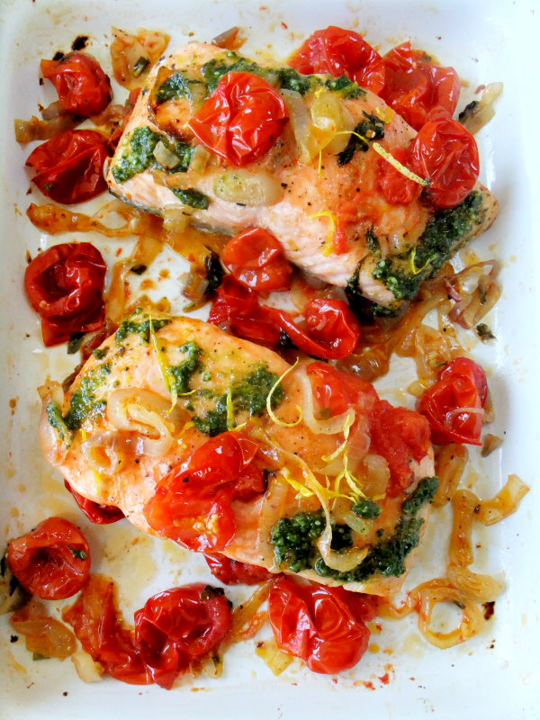

Baked Salmon
Baked Salmon with Tomatoes and Basil? Now listen, this dish is somethin’ special, capisce? You got these juicy salmon fillets, right? We’re gonna season 'em up nice and good, then slide 'em in the oven till they’re just perfect. Top 'em off with sweet cherry tomatoes that pop like fireworks and fresh basil—makes it sing, ya know?
Drizzle a little olive oil and lemon juice on there, maybe a whisper of garlic, and you got yourself a meal that’s gonna make you wanna kiss your mother. Serve it up with some roasted veggies or a crisp salad, and you’re in business, my friend. Buon appetito!
Ingredients
- 1lb of salmon
- Grape tomatoes
- Basil
- Olive oil salt
Instructions
- Preheat the Oven: Set your oven to 375°F (190°C) so it’s nice and hot when you’re ready.
- Prepare the Salmon:Place the salmon fillets on a baking sheet lined with parchment paper. Season them with salt, pepper, and a drizzle of olive oil.
- Add the Toppings:Scatter halved cherry tomatoes over the salmon and sprinkle fresh basil leaves on top. You can also add minced garlic for extra flavor.
- Bake:Pop the baking sheet in the oven and let it bake for about 15-20 minutes, or until the salmon flakes easily with a fork.
- Serve:Once it’s done, drizzle with a bit more olive oil and lemon juice, and serve with your favorite sides. Enjoy your meal!

Get more recipes